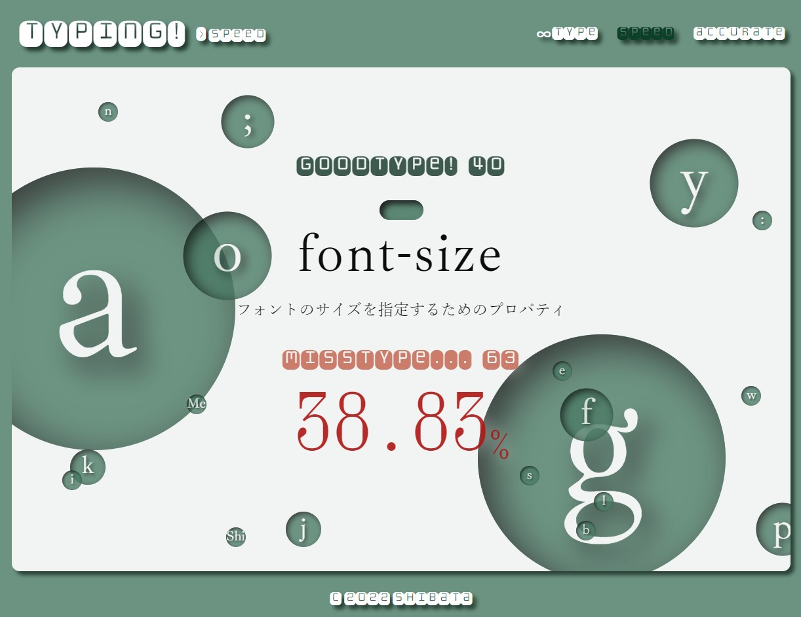
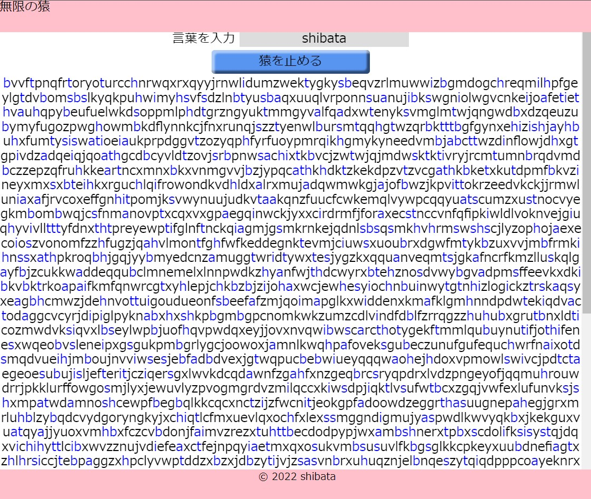

WORKS
-

速読強要文庫
人間が文章を読む際にもっとも時間をかけている視線の移動を無くすことで、速読が出来るようにしたwebアプリです。著作権の消滅した名著を使用しています。文庫本型のUIにこだわりました。
-

typing!
気持ち良いUIを目指したタイピングゲームです。 html/css/javascriptで頻出する用語を練習でき、リアルタイムでタイピング精度を見ることができます。 苦手なキーが分かりやすい表示になっています。 バルーンはクリックすると破裂させられます。
-

無限の猿アプリ
「無限の時間があれば、猿が無作為にキーボードを叩き続けれるといずれシェイクスピアの戯曲が完成する」という『無限の猿定理』の実証実験用アプリです。数文字の英単語でも滅茶苦茶時間がかかることが分かります。 制作中。